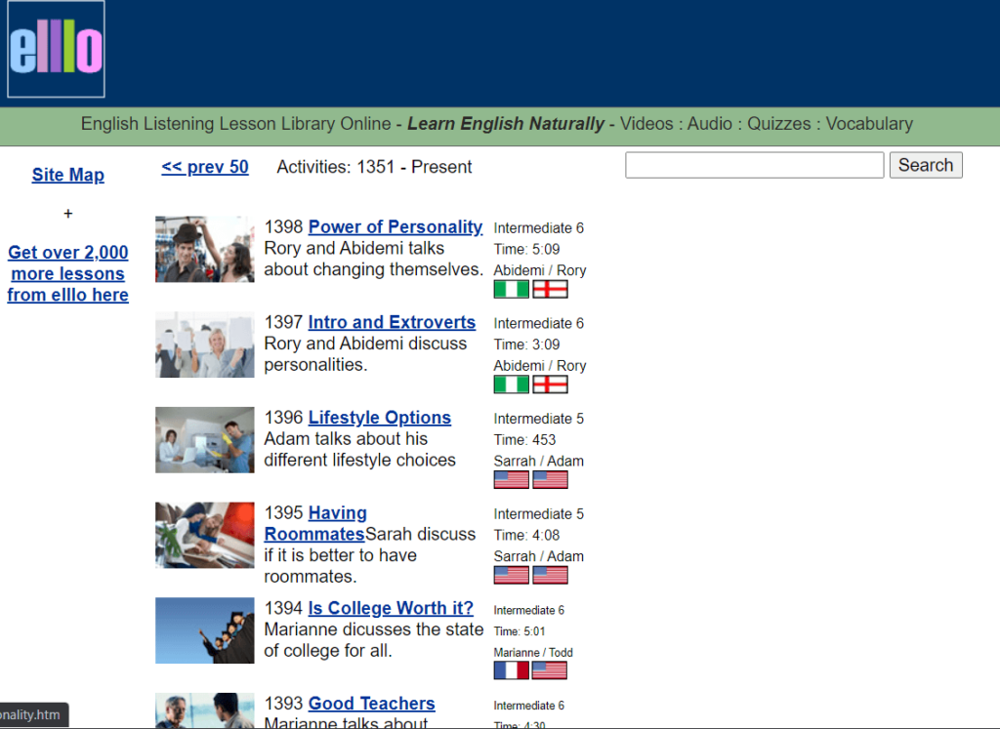

BBC Learning English là trang web học tiếng anh online chuyên về chủ đề ngữ pháp, từ vựng, phát âm, tìm hiểu bí quyết dạy tiếng Anh…, ngoài ra bạn cũng có thể tự kiểm tra trình độ tiếng Anh qua các bài thi trực tuyến. Ngoài ra, còn có rất nhiều bài luyện nghe có thể download ngay tại website về máy để ôn tập mỗi ngày hiệu quả hơn.

Website tuhocielts.vn chuyên cung cấp tài liệu ôn luyện thi IELTS và tiếng anh công khai với cực nhiều tài liệu hay miễn phí trên website. Đặc biệt các ebook tốn phí trên các diễn đàn hay website khác đều được tuhocielts.vn mua về và đăng tải miễn phí nhằm phục vụ lợi ích cộng đồng. Giúp các bạn học sinh, sinh viên luyện thi tiếng tốt nhất. Với đa dạng nguồn tài liệu giúp mọi người dễ dàng tìm kiếm khi cần.